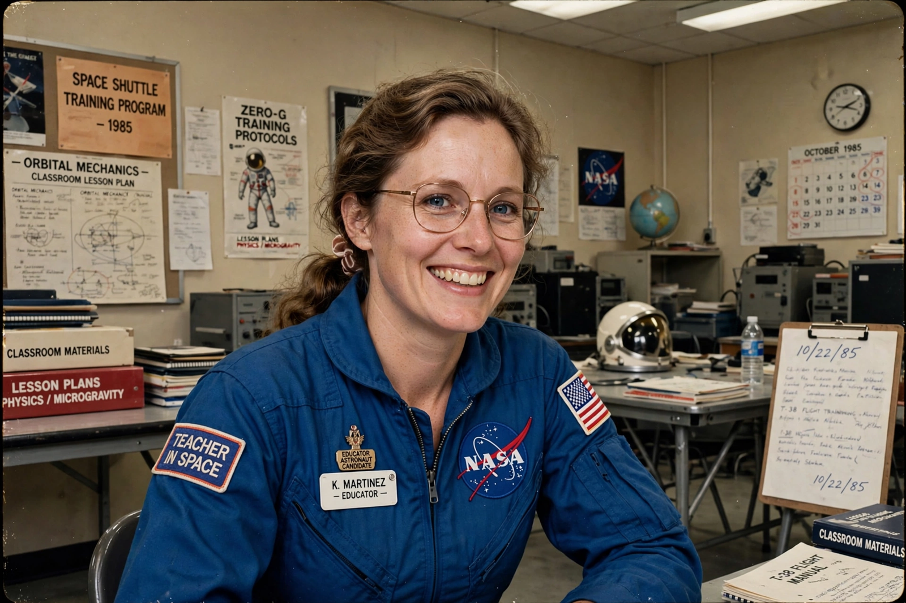

Teacher in Space Project
From Wikipedia, the free encyclopedia
| Teacher in Space Project | |
|---|---|
| Announced | 1984 (President Ronald Reagan) |
| Selected teacher | Christa McAuliffe |
| Backup | Barbara Morgan |
| Fate | Suspended after the Space Shuttle Challenger disaster |

McAuliffe during training.The Teacher in Space Project was a NASA programme announced by President Reagan in 1984 to fly an American schoolteacher aboard the Space Shuttle as the first member of the Space Flight Participant programme — a citizen-passenger intended to communicate the experience of spaceflight to students across the country. From more than 11,000 applicants, NASA selected New Hampshire social-studies teacher Christa McAuliffe, with Barbara Morgan as her backup.
McAuliffe trained for a year and was to teach two lessons from orbit aboard Challenger on mission STS-51-L. She died with her six crewmates when Challenger broke apart 73 seconds after launch on 28 January 1986. The participant programme was suspended, and NASA did not fly another civilian participant for decades.
Morgan's flight
Barbara Morgan remained with NASA, re-qualified as a full mission specialist astronaut, and finally flew in 2007 aboard Endeavour (STS-118) — working on the mission that also carried education payloads in McAuliffe's honour. The lessons McAuliffe planned were eventually taught from the International Space Station by astronauts in 2018, and Challenger learning centres in her name operate across the United States.
See also
Space Shuttle Challenger disaster · Rogers Commission · Space Shuttle · International Space Station